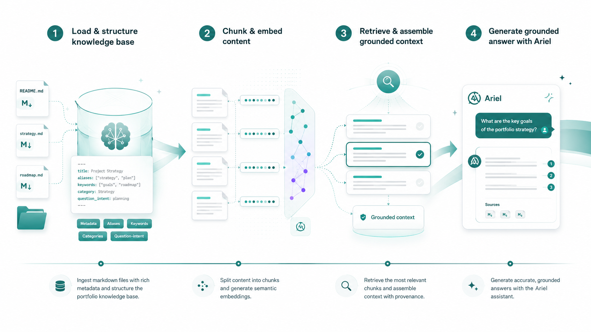
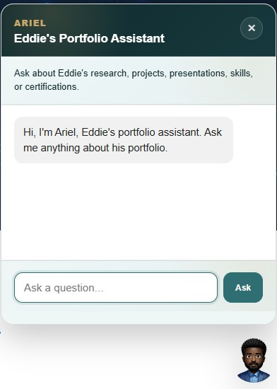
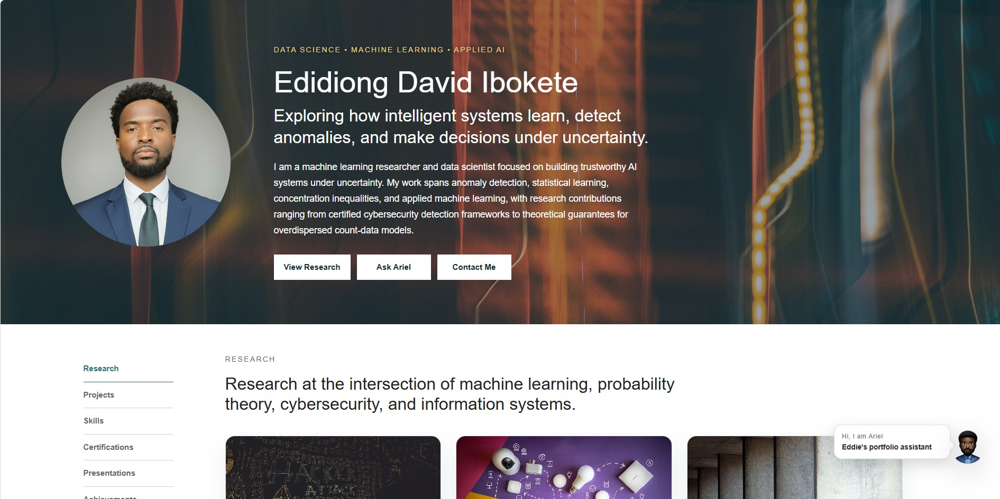
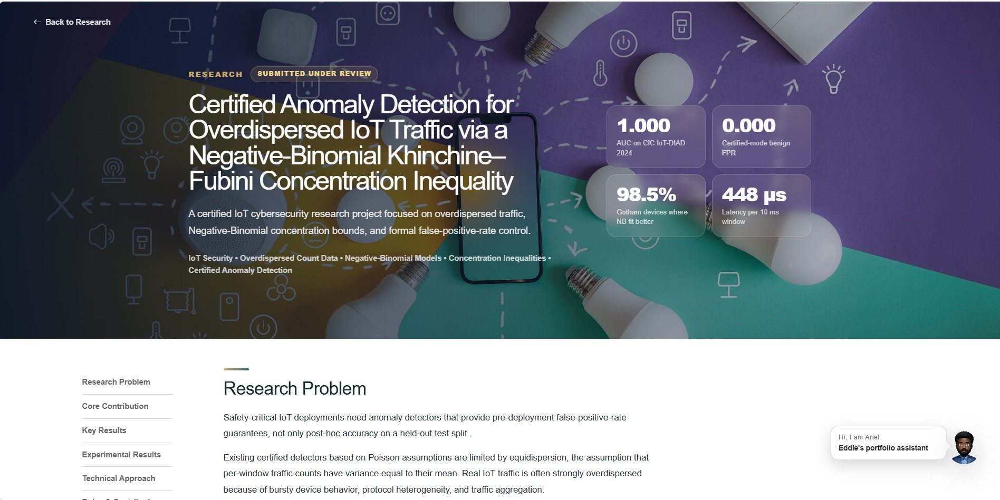

Answers portfolio questions
Ariel can answer questions about research, projects, certifications, achievements, presentations, technical skills, and career background.
Applied AI Project
Ariel connects a curated markdown knowledge base with embedding retrieval, Azure AI, a FastAPI backend, and a GitHub Pages frontend. Visitors can ask about Eddie's research, projects, skills, certifications, presentations, achievements, and career background.
Traditional portfolio websites are static. Visitors have to manually navigate pages to understand a candidate’s research, projects, skills, certifications, achievements, and technical background. This creates friction for recruiters, collaborators, and technical reviewers who may want quick answers to specific questions.
Ariel addresses this by adding an interactive AI question-answering layer over a curated portfolio knowledge base, allowing visitors to explore Eddie’s work through natural language instead of page-by-page browsing.
What research has Eddie completed? What machine learning projects has he built? What presentations has he given? What is Project ARIEL? How does his RAG assistant work?
Ariel helps visitors explore Eddie's portfolio through natural-language questions. It does not replace the portfolio website. It adds an intelligent assistant layer that can retrieve relevant portfolio documents and generate grounded answers from the curated knowledge base.
Ariel can answer questions about research, projects, certifications, achievements, presentations, technical skills, and career background.
Instead of relying only on general model knowledge, Ariel retrieves relevant portfolio documents before generating an answer.
The assistant is instructed to answer from the provided context and avoid inventing unsupported facts when the portfolio context is insufficient.
Ariel is built as a cloud-backed RAG application connected to a static GitHub Pages portfolio website. The system separates the public portfolio frontend from the AI backend, allowing the assistant to retrieve curated portfolio knowledge, assemble context, and generate grounded responses through a deployed API service.
Ariel uses retrieval-augmented generation to connect a structured portfolio knowledge base with an OpenAI language model, allowing visitors to ask questions and receive grounded answers from curated portfolio content.

The knowledge base is organized into retrieval-focused markdown files with YAML front matter. The metadata includes fields such as title, category, status, technologies, aliases, keywords, question intents, and related topics.
Ariel appears as a floating assistant widget on the live portfolio website. The widget is available on the homepage and research detail pages, and it can be loaded on additional pages by including the assistant script.



Ariel uses a split deployment architecture. The portfolio website is hosted with GitHub Pages, while the AI assistant runs through a FastAPI backend deployed on Azure App Service. This separates the public frontend from the retrieval and answer-generation service, making the assistant easier to maintain, expand, and monitor.
The portfolio is served through GitHub Pages and includes a JavaScript assistant widget that lets visitors ask questions directly from the live website.
The assistant backend runs as a FastAPI service on Azure App Service. It receives visitor questions, performs retrieval over the curated knowledge base, builds the response context, and coordinates model-based answer generation.
When a visitor submits a question, the frontend sends the request to the Azure backend. The backend retrieves relevant portfolio context, generates a grounded answer from that context, and returns the response to the Ariel widget for display.
Ariel uses a structured, feedback-driven evaluation workflow that combines retrieval audits, permanent test suites, targeted patch tests, smoke tests, baseline reports, and monitoring for retrieval latency and question size.
Across the current 17-suite retrieval audit, all 262 questions retrieved the expected document at rank 1 and within the top-k results, producing 100% top-1 and 100% top-k retrieval accuracy.
I designed and implemented Ariel as an end-to-end applied AI assistant that connects structured portfolio knowledge, retrieval-based reasoning, backend deployment, and frontend user interaction into a working RAG application.
Built the full retrieval-augmented generation pipeline, including document loading, chunking, embedding generation, semantic retrieval, context assembly, and grounded answer generation using OpenAI models.
Designed a structured markdown knowledge base with metadata, aliases, keywords, project categories, and question intents so Ariel can accurately retrieve information about my research, projects, achievements, and technical background.
Created evaluation workflows to test retrieval quality, measure top-k accuracy, review similarity scores, track failed queries, and improve the knowledge base based on retrieval performance instead of guesswork.
Deployed the FastAPI backend on Azure App Service and integrated Ariel into my GitHub Pages portfolio through a frontend assistant widget, turning the project into a live, interactive AI product.
Ariel is currently deployed as a cloud-backed portfolio AI assistant connected to Eddie’s live GitHub Pages portfolio. The current version combines a curated knowledge base, embedding-based retrieval, context-grounded answer generation, a FastAPI backend on Azure App Service, and a JavaScript assistant widget integrated into the portfolio website.
Ariel is live as an interactive portfolio assistant that can answer questions about Eddie’s research, projects, skills, certifications, presentations, achievements, and professional background using curated knowledge base content.
A mature evaluation workflow is now in place, combining permanent retrieval suites, targeted feedback tests, smoke tests, top-1 and top-k accuracy checks, similarity-score review, report generation, and failure analysis to protect answer quality as the knowledge base evolves.
The knowledge base is actively being expanded as the portfolio grows, with structured markdown files, metadata, aliases, keywords, and question intents added for research, projects, achievements, and professional background.
Next improvements include source-aware answer display, supporting snippets or references, cold-start optimization, further automation of regression testing, and deeper production monitoring for answer quality, retrieval drift, and system reliability.
Ariel is available through the floating assistant widget on the portfolio website.
DeployedCurated markdown and YAML documents organize the portfolio content used for retrieval.
Private implementationRetrieval audits and smoke tests track performance across portfolio question suites.
Internal reports